HELLO / 你好
Hi, 我是张琳茁
Zhang Linzhuo Vicky
MY FILE / 报道、叙事与人工智能的交叉实践
关注新闻、叙事与未来媒体。
用清楚的故事，连接人与正在变化的世界。
OPEN TO WORK
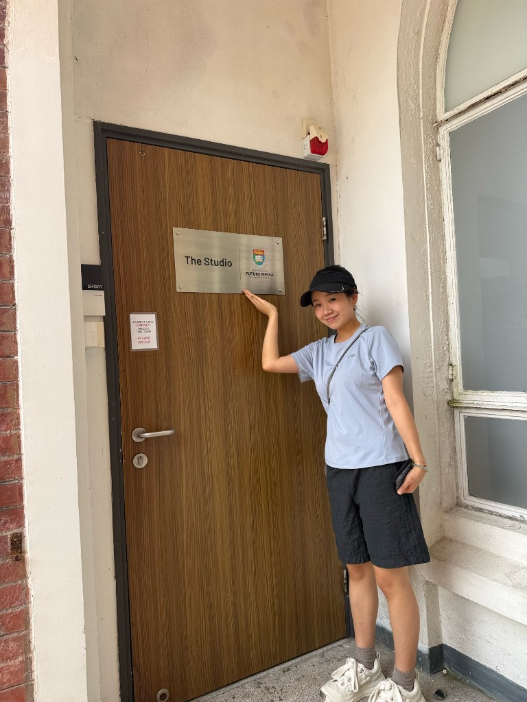
NOW
AI Media x 内容创作
持续把故事说清楚
📍Location：HKU School of Future Media
01 / LEARNING PATH
我的学习坐标
-
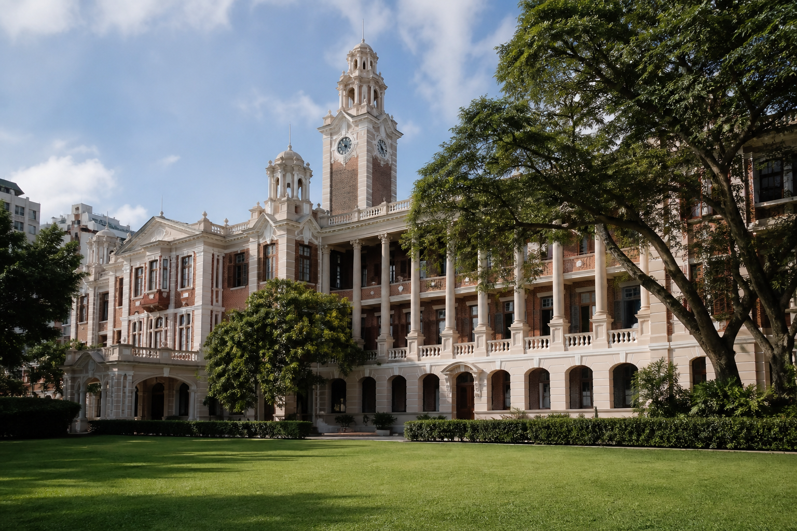
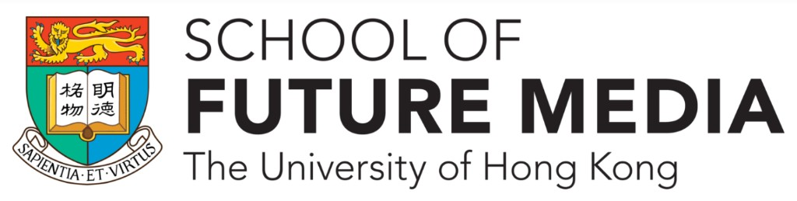
2025.08 — 2026.11
硕士 / 新闻学 · 人工智能与创新
香港大学
未来媒体学院 · School of Future Media
主修课程：数字新闻（Digital Journalism）、中英新闻写作（Reporting and Writing）、视频新闻制作（Video News Production）、AI 媒体与创新（AI and Media Innovation）、新闻数据技能（Data Journalism）
入学奖学金 · 新闻及传媒研究中心，2025
-
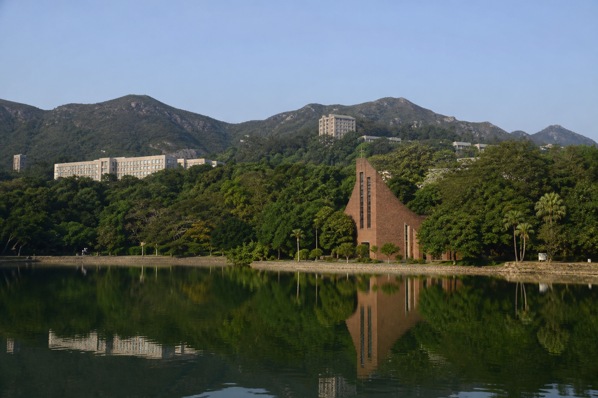
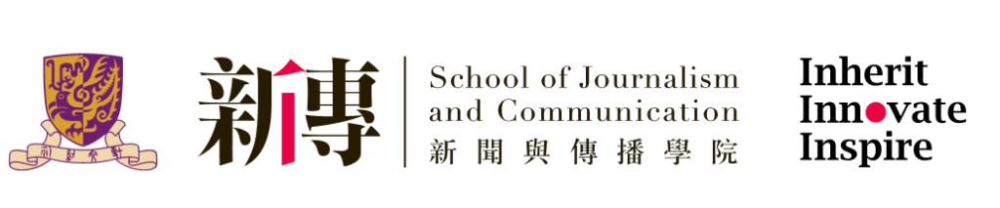
2021.08 — 2024.12
本科 / 新闻传播学 · 广告与公关
香港中文大学
新闻与传播学院 · School of Journalism and Communication
主修课程：品牌整合营销（Integrated Marketing Campaign）、受众分析与策略（Audience Analysis & Strategy）、媒体与 AI 工具应用（AI Applications in Media）、传播理论（Communication Theory）
岑维休新闻与传播学业优异奖，2024
成长路径
02 — 实习经历
我的实习经历
-
2026.05 – 至今
实习记者
中央广播电视总台亚太总站香港站
- 参与中英双语新闻采编，协助记者采访香港各界人士。覆盖中国民乐、FIFA 世界杯博物馆、赤柱国际龙舟锦标赛，以及南海仲裁案裁决新批驳等发布会。前期负责资料搜集与嘉宾联络，跟拍采访，后期协助写稿与剪辑。相关内容在 CGTN、CCTV-4、央视新闻、央视频播出。
- 参与庆祝香港回归祖国 29 周年等主题报道：从前期策划到典礼、访谈与群众互动等现场执行，协助素材统筹与初稿撰写；直播时配合调度与应急，保障流程顺畅。
-
2025.09 – 2025.12
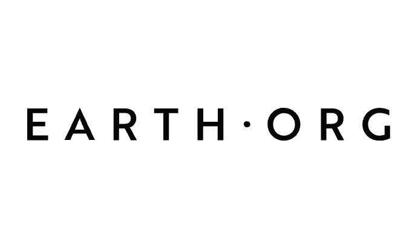
新媒体运营 / 撰稿人
Earth.Org · 香港
- 参与 Instagram 日常运营：策划并制作突发气候快讯、每周资讯摘要、互动短视频与问答栏目，并负责深度专题的编辑与发布。
- COP30 国际气候大会期间，撰写并发布实时会议总结。单条帖文获赞 16k+，约为同期平均互动的五倍，账号整体曝光提升约 50%。
- 参与平台首篇数据可视化报道：从选题、用 R Studio 清洗与分析数据、制作信息图表到成稿，把数据洞察接到时效新闻里，让报道更好读、也好传。
-
2024.05 – 2024.07
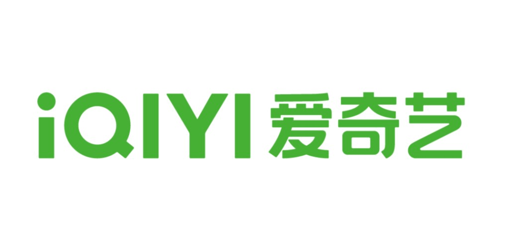
实习导演
爱奇艺 · 长沙
- 参与综艺前期策划：协助梳理剧本叙事、讨论分镜与视觉风格，并在策划会上把创意落到具体脚本。随团队赴北京、上海、青岛等地勘景，协助预判调度问题，保障拍摄推进。
- 辅助后期：在剪辑师与导演指导下参与节奏与风格校准，让成片既贴合创作意图，也照顾观看体验。
-
2023.05 – 2023.09
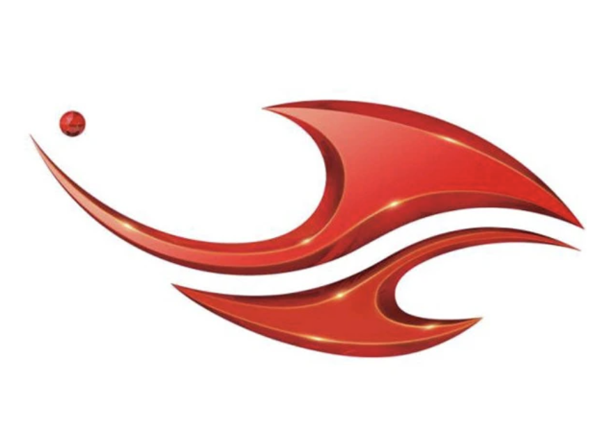
实习记者
吉林广播电视台 · 长春
- 参与短视频新闻的策划与制作：协助选题、写脚本与后期剪辑。在团队指导下，按热点与平台传播节奏做内容，累计参与 90 余条短视频，投放微博、抖音与微信公众号。
- 参与专题访谈全流程：从故事构思、选题提案、脚本与拍摄，到剪辑发布，共 4 场。主题包括一汽红旗品牌专题、国际献血日公益宣传，以及东北亚国际博览会外交访谈。
03 — 项目成果
作品集
-
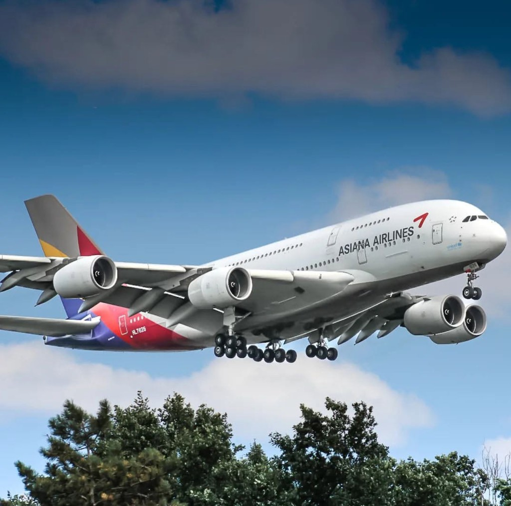
韩亚航空（香港）
- 在 3 人小组中为韩亚航空设计香港毕业季特别活动，结合 MBTI 人格测试触达应届毕业生，提案 TVC、海报与西九龙文化区线下展览。
- 负责目标受众研究与访谈视频制作剪辑。活动获韩亚航空社媒与公关部良好反响，并于 2024 年被参考实施。
-
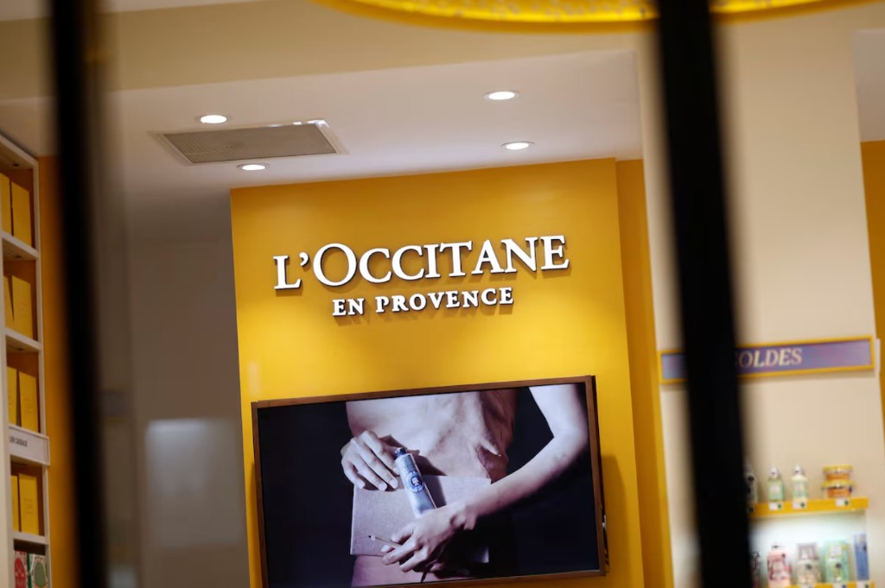
欧舒丹亚太地区可持续发展项目（香港）
- 在欧舒丹亚太区可持续发展推广中，策划并执行 Instagram、微信、小红书等活动，传播绿色产品与可持续消费理念，提升品牌形象。
- 在 4 人小组里负责目标受众分析与市场研究，梳理需求、偏好与趋势，为营销策略和产品定位提供依据。
-
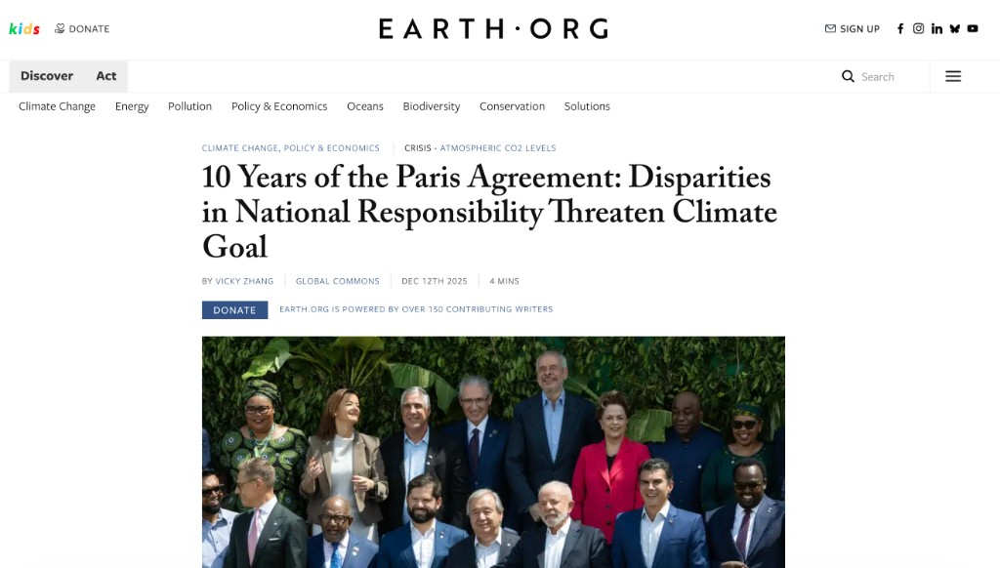
Earth.Org｜巴黎协定十年
- 实习期间参与平台首篇数据可视化报道的策划与制作，自主完成选题、R Studio 数据清洗与分析、信息图表到成稿的全流程。
- 把数据洞察接到时效新闻，提升报道的传播力与可读性。文章署名 Vicky Zhang，发布于 Earth.Org。
-
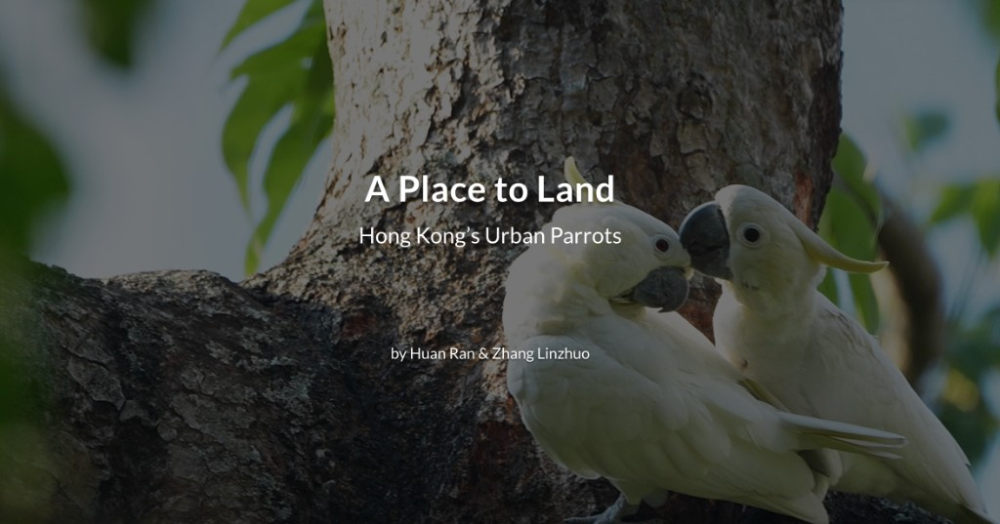
香港大学硕士研究生毕业项目
- 与同学合作完成 13 分钟英文新闻纪录片，关注香港濒危小葵花鹦鹉。从策划到成片全程主导，独立联络并采访 5 位专家与爱好者。
- 独立完成后剪与成片，获港大新闻及传媒研究中心 A 级评价，并发布于未来媒体学院官网主页。
-
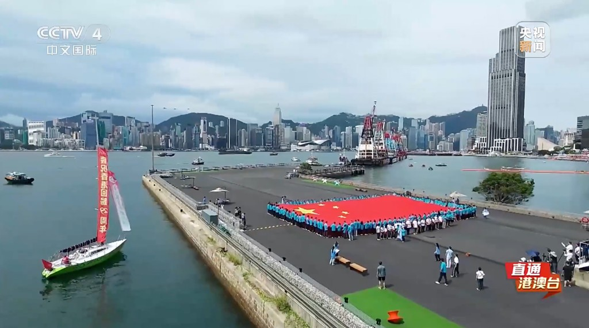
庆香港回归祖国 29 周年报道（CCTV4）
- 协助总台记者完成回归主题系列报道：参与前期策划与典礼、访谈、群众互动等现场执行，配合素材统筹与新闻初稿。
- 直播现场协助调度协调与应急配合，保障播出流程顺畅。相关内容在 CCTV4 等平台播出。
-
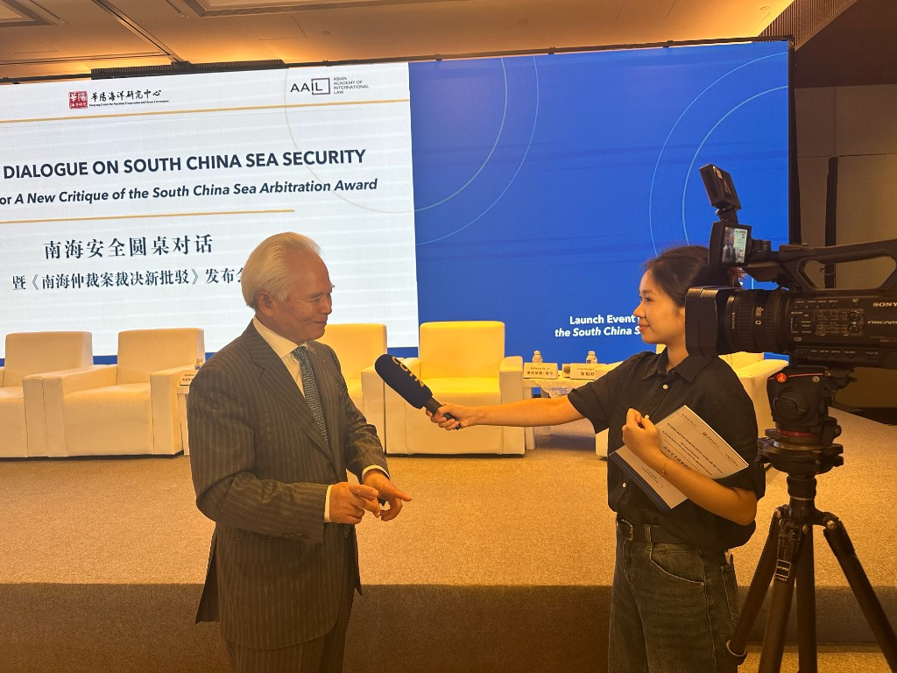
南海安全圆桌对话报道
- 参与总台亚太总站香港站中英双语采编，协助记者采访「南海仲裁案裁决新批驳」等发布会：前期资料与嘉宾联络，跟拍采访，后期协助写稿与剪辑。
- 相关内容在 CGTN、CCTV4、央视新闻、央视频等平台播出。
左右滑动查看其他
04 — 联系
下一段经历 也许可以一起创造
- vickyzhanglinzhuo@163.com 邮箱
- 电话
- 项目成果 作品集